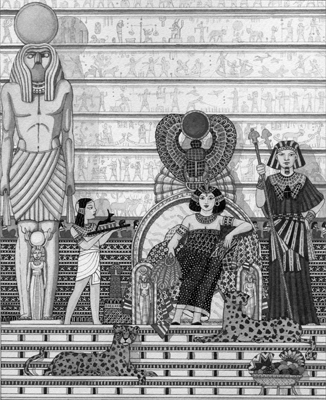
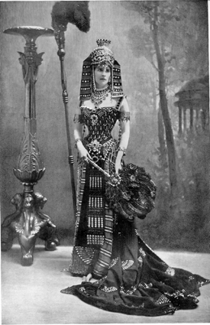
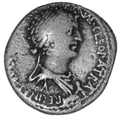

“Tüm korkunç ve garip olaylara kapımız açık,
ama konfordan rahatsız oluruz.”
Cleopatra (Mısır’ın içinden geçtiği
çalkantılı duruma atıfta bulunuyor.)
Milattan Önce 51 yılında Mısır’da bir kral öldü. Onun ölümüyle Cleopatra efsanesi de başlamış oluyordu. Kral Ptoleme, krallığını henüz 18 yaşındaki kızı Cleopatra ve 12 yaşındaki oğlu XIII. Ptoleme’ye bırakmıştı. Kralın ölümüyle birlikte çocukların velayeti, Romalı bir lider olan Pompey’e kaldı. Böylelikle, kralın ölümünü takip eden iki asır boyunca devam edecek olan, Roma-Ptoleme hanedanlığı bağlantısının temelleri de atılmış oluyordu. Ptoleme hanedanlığının, dolayısıyla Mısır’ın gücü azalırken, Roma İmparatorluğu yükselişe geçmişti. Mısır şehirleri bir bir düşerken, Ptolemelilerin yapabildiği tek şey, Romalılarla bir ittifaka girmekti. Kralın ölümüyle birlikte Mısır üzerindeki Roma gölgesinin koyuluğu artmış, hanedanlık çatırdamaya başlamıştı. Şerlerinden korunmak için Romalılara haraç ödeniyordu.
Tahta çıkması için kardeşiyle evlenmesi gerekti
Yeni şartlar ışığında krallık Cleopatra’nın ellerine kalmıştı, ama bir sorun vardı: Ülkeyi tek başına yönetemezdi. Zira Mısır kanunlarına göre kadın hükümdar, bir kral olmaksızın hükmedemezdi. Bu kral, bir evlat ya da bir kardeş de olabilirdi. Bu şart gereği Cleopatra, kardeşi VIII. Ptoleme ile bir evlilik yaptı (Evet, insanı şok ediyor, ama bu tür evlilikler, o dönemin Mısır seçkinleri arasında çok yaygın bir uygulamaydı!) Ptoleme’nin, isminin en önde yazılması şeklindeki ısrarlarına rağmen, kardeşinin/kocasının ismini tüm resmi belgelerden temizleten Cleopatra, kısa zamanda iktidarı paylaşmaya niyeti olmadığını da göstermiş oluyordu. Dönemin tüm portrelerinde kendisi yer alırken, ismini sikkelerin üzerine yazdırmakta da gecikmedi. Yaşı küçük, ama ihtirası büyüktü...
İhtirası tahtından ediyor
İktidara geldiğinde etrafındaki dünya çatırdıyordu. Kıbrıs, Suriye ve Afrika’nın kuzeyindeki bölgeler gitmişti. Dışarıda anarşi, içerideyse kıtlık vardı. Oysa Makedon kökenli Cleopatra’nın hayallerini süsleyen, bir dünya imparatorluğuydu. Asrının tüm erkek hükümdarları da aynı şeyi hayal etmiyor muydu?

Meşhur Cleopatra tasvirlerinden biri
Cleopatra’nın ‘tek adamlığa’ soyunması, özellikle saray eşrafını kızdırıyordu. Ptoleme’nin ismini Mısır’ın gündelik hayatından kazıması, gelenekçi sarayı ayağa kaldırdı. Haremağası Pothinus’un liderliğindeki bir saray darbesiyle Cleopatra devrildi. Kardeşi/kocası, artık Mısır’ın tek hâkimi olmuştu, ama genç kadının o kadar da erken pes etmeye niyeti yoktu. Pelesium’da (bugünkü Mısır/Port Said yakınları) kendisine sadık adamlarla bir isyana kalkıştıysa da, bu isyan uzun soluklu olmayacak ve Cleopatra, hayatta kalan tek kız kardeşi Arsinoe ile birlikte Mısır’dan kaçmak zorunda kalacaktı.
Roma’nın hâkimi Caesar’ı şaşırtıyor
Cleopatra sürgündeyken, bir zamanlar hamiliklerini yapan Pompey, Roma’daki iç savaşa müdahil olmuştu, ancak başından büyük bir işe girdiğini kısa sürede anlayacaktı. Zira karşısında Caesar vardı. MÖ 48’de Caesar’ın güçlerinden kaçarak İskenderiye’ye sığınmak zorunda kaldı. Lakin bir süre sonra, Ptoleme hanedanlığı adına çalışmaya başlayan yakın adamlarından biri tarafından öldürüldü ve ailesinin gözleri önünde kafası kesildi. Bu işin arkasında, Caesar’ın güvenini kazarak, müttefiki olmak isteyen ve böylelikle ülkesi üzerindeki maddi manevi Roma baskısını hafifletmeyi planlayan Mısır Kralı Ptoleme’nin olduğuna inanılıyordu. Dönemin Mısır’ında, ihanet, cinayet ve sürekli değişen müttefik arayışları, hayatın ayrılmaz rutinlerinden olmuştu.
Zaman, uyanık Ptoleme’nin evde yaptığı hesabın çarşıya uymadığını göstermekte gecikmeyecekti. Henüz Pompey’in kanı kurumamıştı ki Caesar, Mısır’a ayak bastı. Ptoleme büyük bir gururla, Pompey’in kesik başını Caesar’a sundu. Ama hiç beklemediği bir tepkiyle karşılaştı. Her ne kadar siyasi açıdan rakibi olsa da Pompey, Roma Konsülü’nün üyelerinden biri ve aynı zamanda Caesar’ın tek yasal kız kardeşi Julia’nın (ki doğum yaparken çocuğu ile birlikte ölmüştü) dul eşiydi. Roma’nın hâkimi öfkelenmişti. Bununla birlikte Caesar, bu fırsatı değerlendirmekte gecikmedi. Mısır’ın başkentine el koyarak, bir türlü iktidarı paylaşamayan Ptoleme ile Cleopatra arasına girdi. Bu şekilde hem taraflar hem de Mısır üzerinde sürekli bir denetim kurmayı planlıyordu. Ama bu arada kendisini bekleyen büyük aşktan hiç mi hiç haberi yoktu...
Caesar’ın Ptoleme’ye olan öfkesinden yararlanmak isteyen Cleopatra, başkentteki saraya dönmekte gecikmedi. Hem de ne dönüş! Rivayete göre, düşman hatlarını geçerken yakalanmamak için kendisini bir İran halısına sardırmış, sonra bu halı uşakları tarafından Caesar’a sunulmuştu. Halı açıldı ve genç kadın, yuvarlana yuvarlana ayak ucuna kadar geldiği Caesar’ın gözlerinin içine baktı. Asırlara meydan okuyarak günümüze kadar gelen o efsanevi aşk işte o an başladı.
Dokuz ay sonra Cleopatra, Caesar’ın çocuğunu doğurdu. Bu aşk, dünya iktidarı hırsıyla yanıp tutuşan kalbini bir nebze yumuşatmış olmalıydı ki Caesar, Mısır’ı topraklarına katma fikrinden vazgeçerek, çocuğunun annesini Mısır tahtına oturtmaya karar verdi. Belki de bu şekilde, bazı tarihçilerin iddia ettiği gibi, Mısır’ı ‘kukla bir rejimle’ kendi denetiminde tutmayı planlıyordu.
Durum, devrik kral kardeş/koca’nın hiç ama hiç hoşuna gitmemişti. Ayaklandı. Kısa süreli bir iç savaşın ardından geriye kalan, XIII. Ptoleme’nin, Nil nehrindeki timsahların dişleri arasında kalan parçalarıydı. Cleopatra, eskisinden daha güçlü bir şekilde yine tahtındaydı ama o kanunlar yok muydu o kanunlar? Bu kez de yanına iktidar ortağı olarak, diğer bir kardeş; XIV. Ptoleme oturmuştu...
Aralarındaki 30 yıllık yaş farkına rağmen Caesar ile Cleopatra, Roma’nın efendisinin Mısır’da kaldığı bir yıl boyunca (MÖ 48-47) mutlu bir birliktelik yaşadılar. Tanıştıklarında Cleopatra 21, Caesar’sa 50 yaşındaydı. Cleopatra, Caesar’dan olan oğluna Ptoleme Caesar adını vermişti. Ama çocuk daha çok (Küçük Caesar) anlamına gelen ‘Caesarion’ ismiyle çağırılacaktı. Cleopatra’nın oğulları Caesarion’u varis ilan etmesini istemesine rağmen, İmparator buna yanaşmadı, onun yerine yeğenlerinden Octavian’ı varis ilan etti. Cleopatra’nın Caesarion’un doğu ve batıyı birleştireceği, Mısır ve Roma’nın varisi olacağı şeklindeki hayalleri Nil nehrinin bulanık sularında kaybolmuştu.
Cleopatra çocuğuyla birlikte birkaç kez Roma’yı ziyaret etti. Ve muhtemelen Caesar, suikasta kurban gittiğinde de Roma’daydı. XIV. Ptoleme ölünce Cleopatra, eş yönetici ve varisi olarak oğlunu atadı. Ve o günün şartlarına göre sıradan bir uygulama olarak, hem kendinin hem de oğlunun istikbalini –ve tabii ki iktidarlarını- sağlama alacağını düşünerek, kız kardeşi Arsinoe’yu öldürttü.
Caesar’ın suikasta kurban gitmesinin ardından Roma karışmış, iç savaş çıkmıştı. Suikastçıları Brutus ve Cassius’un önderliğindeki klik, Marcus Antonius, Caesar’ın evlatlığı ve veliahdı Octavian ve sıkı bir Caesar hayranı Marcus Aemilius Lepidus tarafından mağlup edildi. Ortalığın yatışmasından sonra Marcus Antonius Roma İmparatorluğu’nun doğusunun, Octavian ise batısının efendisi olmuştu. Lepidus ise imparatorluğun Afrika ve İber Yarımadası’ndaki topraklarının başına geçmişti. Yeni ortaya çıkan bu üçlü iktidarın (triumvirate) en güçlü ismi olarak Marcus Antonius göze çarpıyordu.
Yeni bir Romalı, yeni bir aşk: Marcus Antonius sahnede
Bu arada ülkesine kaçmış olan Cleopatra, Roma’daki yeni güç dengelerini gözetmekten de geri kalmıyordu. Kendisinin ve çocuğunun istikbali için bir gözü Mısır’da, diğeri Roma’da olmalıydı. Roma’nın üç patronu vardı. Cleopatra hangisine yaklaşacağını gayet iyi biliyordu. Roma’dakilerse, Mısır’daki bu ‘Büyük İskender artığının’ kendi krallığındaki güç istihkâmı için Roma’yı kullanmasından fena halde rahatsızdılar.
MÖ 42’de Marcus Antonius, Roma’ya olan sadakatine ilişkin meseleleri konuşmak için Cleopatra’yı Tarsus’a davet etti. Böylesi bir davete hazırlıklı olan Cleopatra, avı hakkında yeteri kadar istihbarat toplamıştı. Marcus Antonius’un kısıtlı taktik ve stratejik yeteneklerinden, asalet düşkünlüğünden, alkole aşırı ilgisinden, ihtiraslarından ve hepsinden öte kadınlara olan merakından fazlasıyla haberdardı. Her ne kadar Mısır kıtlık, kuraklık ve sefaletten kırılma noktasında olsa da Cleopatra, takındığı tavırlarla Romalıya, kimsenin Mısır’ı, kendisinden daha iyi yönetemeyeceği izlenimini vermek istiyordu.
Tarsus görüşmesine giderken üzerine ülkesindeki en iyi mücevherleri takıp takıştırdı, ipekten elbiselere büründü, ilk karşılaşmanın mümkün olduğu kadar çarpıcı olmasını istiyordu. Kimileri Cleopatra’nın bu tavırlarını müstehcenlik ve bayağılıkla bir tutuyordu. O ise hepsinin farkındaydı. Müstehcenliğe düşkün bir adama müstehcen bir meydan okuma...
Marcus Antonius da mavi kanlı bir Ptoleme kadınına sahip olma fikrini sevmişti. Ne de olsa eşi Fulvia, orta sınıfa mensup bir kadındı. Cleopatra, hedefinin zayıf noktalarını gayet iyi analiz etmişti doğrusu.
Bütün şatafatı ve cazibesiyle Romalının karşısına çıkan Cleopatra’nın rüzgârından Marcus Antonius da kaçamadı. İkili aynı yılın kışını birlikte İskenderiye’de geçirdi. Bu arada Roma’dakiler, ikili arasındaki yakınlaşmayı dikkatle takip ettikleri kadar, bu durumdan rahatsız da oluyorlardı. Yine de tarih, kendi bildiği istikamette akmaya devam edecekti. Bir süre sonra Cleopatra’nın Romalıdan biri kız biri erkek, ikizleri oldu: Alexander Helios ve Cleopatra Selene.
MÖ 37’de Marcus Antonius, Partiyanlarla (Perslerle) savaşa giderken bir kez daha İskenderiye’ye uğradı. Cleopatra ile ilişkisini tazeledi ve o tarihten itibaren İskenderiye’ye yerleşti. Bu arada yeni bir çocukları daha olmuştu: Ptolemy Philadelphus. Her ne kadar Marcus Antonius, Roma’daki üçlü yönetimin diğer ayağı Octavian’ın kız kardeşiyle evli olsa da, aynı dönemde, bir Mısır ayiniyle Cleopatra’yla da evlendiği iddia edilir.
Cleopatra: “Roma’da da benim hükmüm geçecek!”
Marcus Antonius, Cleopatra’ya karşı Caesar kadar cimri davranmadı. MÖ 34’te Ermenistan’ı ele geçirmesinin ardından, Cleopatra ve Caesarion, Mısır ve Kıbrıs’ın ortak hükümdarları olarak taç giydiler; Alexander Helios Ermenistan ve Parthia’nın (Orta İran) başına geçirildi; Cleopatra Selene, Cyrenaica’nın (bugünkü Libya’nın), Ptolemy Philadelphus ise Phoenicia (İsrail, Filistin), Suriye ve Cilicia’nın (Güney Anadolu) hâkimi oldu. Tüm bu sürecin ve taçlandırmaların sonunda Cleopatra’ya da duruma yaraşır bir unvan verilmişti: Kralların Kraliçesi. Ama genç kadının bununla yetinmeye niyeti yoktu. O, tüm doğuyu Roma’ya karşı ayaklandıracak bir intikam savaşına girmek ve Roma’da yeni bir evrensel krallık ilan etmek istiyordu! Cleopatra, ‘Dünya İmparatoriçesi’ olma hayaline bir adım daha yaklaşmıştı. Hatta sık sık yanındakilere, “Roma’nın başkentinde de benim hükmüm geçecek!” diyerek, ihtirasını dile getiriyordu.

Cleopatra yüzyıllardır romanlara,
oyunlara, filmlere konu olmaya devam ediyor.
‘İskenderiye Bağışları’ olarak bilinen bu uygulamasıyla Marcus Antonius, Roma İmparatorluğu’nun doğu bölgelerini Cleopatra ve çocukları arasında dağıtmış oluyordu. Sonradan, bu yaptığını “Bize ait bölgelere sadık yöneticiler atıyorum” şeklinde izah edecekti Roma Senatosu’na. Öte yandan Marcus Antonius’un kayınbiraderi Octavian’ın gözüyse Roma İmparatorluğu’nun eşsiz gücündeydi. Marcus Antonius’un Cleopatra ve çocukları karşısındaki cömertliğini, kendisine karşı kullanmakta gecikmeyecek ve Roma’nın Mısır’a savaş açması için kışkırtmalara girişecekti. Octavian bunun meyvesini MÖ 32’de aldı: Roma, iki âşığa karşı savaş açtı.
MÖ 31’de Marcus Antonius’un donanması ile Roma donanması, Actium açıklarında karşı karşıya geldi. Cleopatra da kendi donanmasıyla hazır bulunuyordu. Yaygın efsaneye göre, Cleopatra, Marcus Antonius’un nispeten zayıf donanmasının Romalıların devasa gemileri karşısında tarumar olduğunu görünce kaçtı ve savaşı bırakan Marcus Antonius da onu izledi. Octavian, kaçan ikiliyi Mısır’a kadar takip etti. Yolun sonuna geldiğini ve aşkı Cleopatra’nın da öldüğünü düşünen Marcus Antonius, kendi kılıcıyla intihar etti.
Aşağılanmaktansa ölmeyi tercih etti
Sevgilisi ölünce korumasız kalan Cleopatra, yine Roma’nın efendilerinden birinin, Octavian’ın huzuruna çıkartıldı. Lakin bu kez tarih tekerrür etmeyecekti. Zira muzaffer Octavian’ın, Cleopatra’yla ne ilişkiye girmeye ne de uzlaşmaya varmaya niyeti vardı. Yapmak istediği gayet netti: Cleopatra’yı, bir zamanlar hâkimi olduğu şehirlerde köle olarak dolaştıracaktı! Dünya imparatorluğu hayaliyle yola çıkan Cleopatra’nın aklına muhtemelen, benzer bir durumdan geçmiş kız kardeşi Arsinoe gelmişti. O da kendisi tarafından aynı aşağılamaya maruz bırakılmamış mıydı? Hayır, Cleopatra böyle bir şeye katlanamazdı. Sevgilisi gibi o da intihar etti.
Antik Roma kaynaklarına göre ise, bir engerek yılanının kendisini sokması üzerine öldü. Olay esnasında İskenderiye’de bulunan Yunanlı tarihçi Strabo ise, iki ayrı senaryodan bahseder. Buna göre Cleopatra, ya bir yılan tarafından sokulmuş ya da kendisi zehirli bir karışım içmişti. Dönemin şiirlerinde ağır basan tema da yılanlı seçeneği işaret eder.
Cleopatra’nın ölümünün ardından Caesar’dan olma oğlu Caesarion kendisini Mısır’ın hâkimi ilan etse de bu durum uzun sürmeyecekti. Octavion, çocuğun kellesini vurdurup, kendisini ‘Mısır’ın yeni hükümdarı’, Mısır’ı da heybetli Roma İmparatorluğu’nun vilayetlerinden biri ilan etti.
Cleopatra, âşıkları ve bu âşıklarından olan çocukları ölmüş; atası Büyük İskender’e nasip olmayan dünya imparatorluğunu kurma hayalleri kanla yıkanmış ve Mısır’daki Ptoleme hanedanlığı yerle bir olmuştu. Cleopatra’nın cesedi Mısır çöllerinin kumları arasında çürürken, aynı çöllerde esen kum fırtınaları, Cleopatra efsanesini dalga dalga yaymaya başlamıştı...
Güzel değil ama güçlü ve yetenekli bir idareciydi
Popüler kültürün ona biçtiği ‘hafifmeşrep’ kisvesini kaldırdığımızda, 18 yaşındayken ülkesinin hâkimiyetini ellerine alan Cleopatra’nın, aslında oldukça eğitimli, birçok dili rahatlıkla konuşabilen ve yaşından çok daha büyük bir olgunluğa sahip bir yönetici olduğunu görmemiz zor olmayacaktır. İdarecilik vasfıyla Mısır’ın kuraklıkla etkili şekilde mücadele etmesini sağlamış, sulama kanalları yaptırmış ve verimli ekonomik reformlarla ülkesindeki refahı arttırmaya soyunmuştu. Üstelik iktidara geldiğinde, babasından tam anlamıyla bir enkaz devralmıştı. Ülke iç savaşın eşiğindeydi ve aynı zamanda yönetime talip kardeşleri tarafından ortadan kaldırılma ihtimali, Demokles’in kılıcı gibi sürekli üzerinde sallanıyordu. Heybetli Roma İmparatorluğu’nun ayak seslerinin, tarıma elverişli toprakları ve diğer zenginlikleriyle Roma’dakilerin ağzını sulandıran Mısır’ı titrettiği bir dönemde, kendini yönetimde bulmuştu. Cleopatra’nın günümüzde popüler bir ikon haline gelmesine neden olan ilişkileriyse, kişisel olduğu kadar, derin politik hesaplara dayanıyordu. Önce Caesar, ardından da Marcus Antonius’la yaşadığı ilişkilerle, doğudaki Pers tehdidine karşı ülkesini korumaya alırken, Roma’nın bir silindir gibi dünya coğrafyasını silip süpürdüğü bir dönemde, Mısır’ın 20 yıldan daha fazla bir süre bağımsız yaşamasını sağlamıştı.

Cleopatra’nın ilk icraatlarından biri, sikkelerin
üzerine kabartma figürünü basmak olmuştu.
NOTLAR